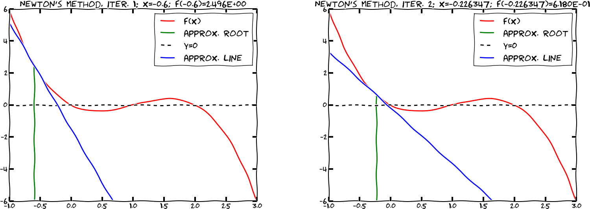
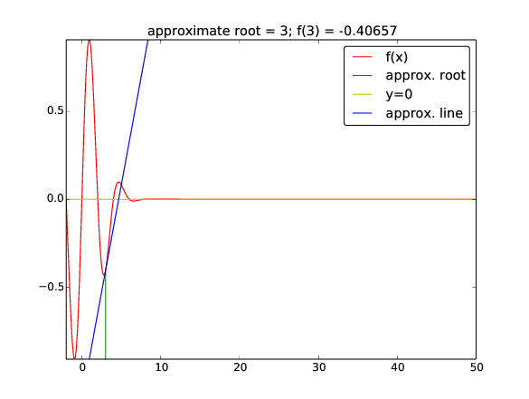
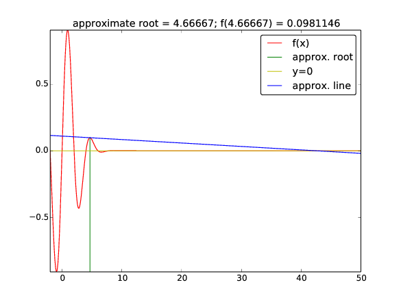

Sequences is a central topic in mathematics: $$ x_0,\ x_1,\ x_2,\ \ldots,\ x_n,\ldots, $$
Example: all odd numbers $$ 1, 3, 5, 7, \ldots, 2n+1,\ldots $$
For this sequence we have a formula for the \( n \)-th term: $$ x_n = 2n+1 $$ and we can write the sequence more compactly as $$ (x_n)_{n=0}^\infty,\quad x_n = 2n+1$$
$$ 1,\ 4,\ 9,\ 16,\ 25,\ \ldots\quad (x_n)_{n=0}^\infty,\ x_n=n^2$$ $$ 1,\ {1\over 2},\ {1\over3},\ {1\over4},\ \ldots\quad (x_n)_{n=0}^\infty,\ x_n={1\over {n+1}}$$ $$ 1,\ 1,\ 2,\ 6,\ 24,\ \ldots\quad (x_n)_{n=0}^\infty,\ x_n=n!$$ $$ 1,\ 1+x,\ 1+x+{1\over2}x^2,\ 1+x+{1\over2}x^2+{1\over6}x^3,\ \ldots\quad (x_n)_{n=0}^\infty,\ x_n=\sum_{j=0}^n {x^j\over j!}$$
Put \( x_0 \) money in a bank at year 0. What is the value after \( N \) years if the interest rate is \( p \) percent per year?
The fundamental information relates the value at year \( n \), \( x_n \), to the value of the previous year, \( x_{n-1} \): $$ x_{n} = x_{n-1} + {p\over 100}x_{n-1} $$
How to solve for \( x_n \)? Start with \( x_0 \), compute \( x_1 \), \( x_2 \), ...
Solve math equations by repeating a simple procedure (relation) many times (boring, but well suited for a computer!)
from scitools.std import *
x0 = 100 # initial amount
p = 5 # interest rate
N = 4 # number of years
index_set = range(N+1)
x = zeros(len(index_set))
# Solution:
x[0] = x0
for n in index_set[1:]:
x[n] = x[n-1] + (p/100.0)*x[n-1]
print x
plot(index_set, x, 'ro', xlabel='years', ylabel='amount')
x_old = x0
for n in index_set[1:]:
x_new = x_old + (p/100.)*x_old
x_old = x_new # x_new becomes x_old at next step
However, programming with an array x[n] is simpler, safer, and enables plotting the sequence, so we will continue to use arrays in the examples
How can we find the number of days between two dates?
>>> import datetime
>>> date1 = datetime.date(2007, 8, 3) # Aug 3, 2007
>>> date2 = datetime.date(2008, 8, 4) # Aug 4, 2008
>>> diff = date2 - date1
>>> print diff.days
367
from scitools.std import *
x0 = 100 # initial amount
p = 5 # annual interest rate
r = p/360.0 # daily interest rate
import datetime
date1 = datetime.date(2007, 8, 3)
date2 = datetime.date(2011, 8, 3)
diff = date2 - date1
N = diff.days
index_set = range(N+1)
x = zeros(len(index_set))
# Solution:
x[0] = x0
for n in index_set[1:]:
x[n] = x[n-1] + (r/100.0)*x[n-1]
print x
plot(index_set, x, 'ro', xlabel='days', ylabel='amount')
p with correct interest rate for day n
p = zeros(len(index_set))
# fill p[n] for n in index_set (might be non-trivial...)
r = p/360.0 # daily interest rate
x = zeros(len(index_set))
x[0] = x0
for n in index_set[1:]:
x[n] = x[n-1] + (r[n-1]/100.0)*x[n-1]
(\( L/N \) makes the equation nonhomogeneous)
Simplest possibility: keep \( c_n \) constant, but inflation demands \( c_n \) to increase...
This is a coupled system of two difference equations, but the programming
is still simple: we update two arrays, first x[n], then c[n], inside the loop
(good exercise!)
No programming or math course is complete without an example on Fibonacci numbers: $$ x_n = x_{n-1} + x_{n-2},\quad x_0=1,\ x_1=1$$
This is a homogeneous difference equation of second order (second order means three levels: \( n \), \( n-1 \), \( n-2 \)). This classification is important for mathematical solution technique, but not for simulation in a program.
Fibonacci derived the sequence by modeling rat populations, but the sequence of numbers has a range of peculiar mathematical properties and has therefore attracted much attention from mathematicians.
N = int(sys.argv[1])
from numpy import zeros
x = zeros(N+1, int)
x[0] = 1
x[1] = 1
for n in range(2, N+1):
x[n] = x[n-1] + x[n-2]
print n, x[n]
Run the program with \( N=50 \):
2 2
3 3
4 5
5 8
6 13
...
45 1836311903
Warning: overflow encountered in long_scalars
46 -1323752223
Note:
int to long or int64 for array elements allows \( N\leq 91 \)float96 (though \( x_n \) is integer): \( N \leq 23600 \)
int - these automatically changes to long when overflow in intlong type in Python has arbitrarily many digits (as many as required in a computation!)long for arrays is 64-bit integer (int64), while scalar long in Python is an integer with as "infinitely" many digits
The program now avoids arrays and makes use of three int objects (which automatically changes to long when needed):
import sys
N = int(sys.argv[1])
xnm1 = 1 # "x_n minus 1"
xnm2 = 1 # "x_n minus 2"
n = 2
while n <= N:
xn = xnm1 + xnm2
print 'x_%d = %d' % (n, xn)
xnm2 = xnm1
xnm1 = xn
n += 1
Run with \( N=200 \):
x_2 = 2
x_3 = 3
...
x_198 = 173402521172797813159685037284371942044301
x_199 = 280571172992510140037611932413038677189525
x_200 = 453973694165307953197296969697410619233826
Limition: your computer's memory
The model for growth of money in a bank has a solution of the type $$ x_n = x_0C^n \quad (= x_0e^{n\ln C})$$
Note:
Initially, when there are enough resources, the growth is exponential: $$ x_n = x_{n-1} + {r\over 100}x_{n-1}$$
The growth rate \( r \) must decay to zero as \( x_n \) approaches \( M \). The simplest variation of \( r(n) \) is a linear: $$ r(n) = \varrho \left(1 - {x_n\over M}\right) $$
Observe: \( r(n)\approx \varrho \) for small \( n \) when \( x_n\ll M \), and \( r(n) \rightarrow 0 \) as \( x_n\rightarrow M \) and \( n \) is big
$$ x_n = x_{n-1} + {\varrho\over 100} x_{n-1}\left(1 - {x_{n-1}\over M}\right)$$ (This is a nonlinear difference equation)
In a program it is easy to introduce logistic instead of exponential growth, just replace
x[n] = x[n-1] + p/100.0)*x[n-1]
by
x[n] = x[n-1] + (rho/100.0)*x[n-1]*(1 - x[n-1]/float(M))
The factorial \( n! \) is defined as $$ n(n-1)(n-2)\cdots 1,\quad 0!=1$$
The following difference equation has \( x_n=n! \) as solution and can be used to compute the factorial: $$ x_n = nx_{n-1},\quad x_0 = 1 $$
x[0] = x0 in the program, you get \( x_0=0 \)
(because x = zeroes(N+1)),
which (usually) gives unintended results!
$$ \sin x = \sum_{k=0}^\infty (-1)^k\frac{x^{2k+1}}{(2k+1)!}$$
$$ f(x) = \sum_{k=0}^\infty \frac{1}{k!}(\frac{d^k}{dx^k} f(0))x^k $$ For "any" \( f(x) \), if we can differentiate, add, and multiply \( x^k \), we can evaluate \( f \) at any \( x \) (!!!)
$$ f(x) \approx \sum_{k=0}^{{\color{red} N}} \frac{1}{k!}(\frac{d^k}{dx^k} f(0))x^k $$
\( N=1 \) is very popular and has been essential in developing physics and technology
$$ \begin{align*} e^x &= \sum_{k=0}^\infty \frac{x^k}{k!}\\ &\approx 1 + x + \frac{1}{2}x^2 + \frac{1}{6}x^3\\ &\approx 1 + x \end{align*} $$
The previous Taylor polynomials are most accurate around \( x=0 \). Can make the polynomials accurate around any point \( x=a \): $$ f(x) \approx \sum_{k=0}^N \frac{1}{k!}(\frac{d^k}{dx^k} f(a))(x-a)^k $$
The Taylor series for \( e^x \) around \( x=0 \) reads $$ e^x= \sum_{n=0}^\infty {x^n\over n!} $$
Define $$ e_{n}=\sum_{k=0}^{n-1} \frac{x^k}{k!} = \sum_{k=0}^{n-2} \frac{x^k}{k!} + \frac{x^{n-1}}{(n-1)!}$$
We can formulate the sum in \( e_n \) as the following difference equation: $$ e_n = e_{n-1} + \frac{x^{n-1}}{(n-1)!},\quad e_0=0 $$
Observe: $$ \frac{x^n}{n!} = \frac{x^{n-1}}{(n-1)!}\cdot \frac{x}{n} $$
Let \( a_n = x^n/n! \). Then we can efficiently compute \( a_n \) via $$ a_n = a_{n-1}\frac{x}{n},\quad a_0 = 1$$
Now we can update each term via the \( a_n \) equation and sum the terms via the \( e_n \) equation: $$ \begin{align*} e_n &= e_{n-1} + a_{n-1},\quad e_0 = 0,\ a_0 = 1\\ a_n &= \frac{x}{n} a_{n-1} \end{align*} $$
See the book for more details
\[ f(x)=0 \]
\[ ax + b = 0 \] \[ ax^2 + bx + c = 0 \] \[ \sin x + \cos x = 1 \]

Simpson (1740) came up with the following general method for solving \( f(x)=0 \) (based on ideas by Newton): $$ x_n = x_{n-1} - {f(x_{n-1})\over f'(x_{n-1})},\quad x_0 \hbox{ given} $$
Note:
def Newton(f, x, dfdx, epsilon=1.0E-7, max_n=100):
n = 0
while abs(f(x)) > epsilon and n <= max_n:
x = x - f(x)/dfdx(x)
n += 1
return x, n, f(x)
Note:
f(x)/dfdx(x) can give integer divisionx and f(x) values in each iteration (for plotting or printing a convergence table)
Only one \( f(x) \) call in each iteration, optional storage of \( (x,f(x)) \) values during the iterations, and ensured float division:
def Newton(f, x, dfdx, epsilon=1.0E-7, max_n=100,
store=False):
f_value = f(x)
n = 0
if store: info = [(x, f_value)]
while abs(f_value) > epsilon and n <= max_n:
x = x - float(f_value)/dfdx(x)
n += 1
f_value = f(x)
if store: info.append((x, f_value))
if store:
return x, info
else:
return x, n, f_value
$$ e^{-0.1x^2}\sin ({\pi\over 2}x) =0\] Solutions: $x=0, \pm 2, \pm 4, \pm 6, \ldots$ $$
from math import sin, cos, exp, pi
import sys
def g(x):
return exp(-0.1*x**2)*sin(pi/2*x)
def dg(x):
return -2*0.1*x*exp(-0.1*x**2)*sin(pi/2*x) + \
pi/2*exp(-0.1*x**2)*cos(pi/2*x)
x0 = float(sys.argv[1])
x, info = Newton(g, x0, dg, store=True)
print 'Computed zero:', x
# Print the evolution of the difference equation
# (i.e., the search for the root)
for i in range(len(info)):
print 'Iteration %3d: f(%g)=%g' % (i, info[i][0], info[i][1])
\( x_0=1.7 \) gives quick convergence towards the closest root \( x=0 \):
zero: 1.999999999768449
Iteration 0: f(1.7)=0.340044
Iteration 1: f(1.99215)=0.00828786
Iteration 2: f(1.99998)=2.53347e-05
Iteration 3: f(2)=2.43808e-10
Start value \( x_0=3 \) (closest root \( x=2 \) or \( x=4 \)):
zero: 42.49723316011362
Iteration 0: f(3)=-0.40657
Iteration 1: f(4.66667)=0.0981146
Iteration 2: f(42.4972)=-2.59037e-79
Try the demo program src/diffeq/Newton_movie.py with \( x_0=3 \),
\( x\in [-2,50] \) for plotting and numerical approximation of \( f'(x) \):
Terminal> python Newton_movie.py "exp(-0.1*x**2)*sin(pi/2*x)" \
numeric 3 -2 50
Newton's method may work fine or give wrong results! You need to understand the method to interpret the results!



A tone A (440 Hz) is a sine wave with frequency 440 Hz: $$ s(t) = A\sin\left( 2\pi f t\right),\quad f = 440 $$
On a computer we represent \( s(t) \) by a discrete set of points on the function curve (exactly as we do when we plot \( s(t) \)). CD quality needs 44100 samples per second.
Code (we use descriptive names: frequency \( f \), length \( m \), amplitude \( A \), sample_rate \( r \)):
import numpy
def note(frequency, length, amplitude=1,
sample_rate=44100):
time_points = numpy.linspace(0, length,
length*sample_rate)
data = numpy.sin(2*numpy.pi*frequency*time_points)
data = amplitude*data
return data
data as an array with float and unit amplitudeint16) as data elements and amplitudes up to \( 2^{15}-1 \) (max value for int16 data)
data = note(440, 2)
data = data.astype(numpy.int16)
max_amplitude = 2**15 - 1
data = max_amplitude*data
import scitools.sound
scitools.sound.write(data, 'Atone.wav')
scitools.sound.play('Atone.wav')
s[n]
# echo: e[n] = beta*s[n] + (1-beta)*s[n-b]
def add_echo(data, beta=0.8, delay=0.002,
sample_rate=44100):
newdata = data.copy()
shift = int(delay*sample_rate) # b (math symbol)
for i in xrange(shift, len(data)):
newdata[i] = beta*data[i] + (1-beta)*data[i-shift]
return newdata
Load data, add echo and play:
data = scitools.sound.read(filename)
data = data.astype(float)
data = add_echo(data, beta=0.6)
data = data.astype(int16)
scitools.sound.play(data)
data1, data2, ...:
# put data1, data2, ... after each other in a new array:
data = numpy.concatenate((data1, data2, data3, ...))
The start of "Nothing Else Matters" (Metallica):
E1 = note(164.81, .5)
G = note(392, .5)
B = note(493.88, .5)
E2 = note(659.26, .5)
intro = numpy.concatenate((E1, G, B, E2, B, G))
...
song = numpy.concatenate((intro, intro, ...))
scitools.sound.play(song)
scitools.sound.write(song, 'tmp.wav')
index_set = <array of n-values: 0, 1, ..., N>
x = zeros(N+1)
x[0] = x0
for n in index_set[1:]:
x[n] = <formula involving x[n-1]>
Can have (simple) systems of difference equations:
for n in index_set[1:]:
x[n] = <formula involving x[n-1]>
y[n] = <formula involving y[n-1] and x[n]>
Taylor series and numerical methods such as Newton's method can be formulated as difference equations, often resulting in a good way of programming the formulas
scitools.sound to generate tonesThe first has values in \( [-1,1] \), the other from \( x_0=0.01 \) up to around 1
Transformation from "unit" \( x_n \) to frequencies: $$ y_n = 440 + 200 x_n $$ (first sequence then gives tones between 240 Hz and 640 Hz)
files/soundeq.py for complete code
Terminal> python soundseq.py oscillations 40
Terminal> python soundseq.py logistic 100
Try to change the frequency range from 200 to 400.